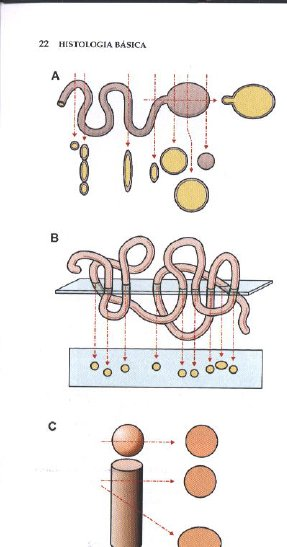
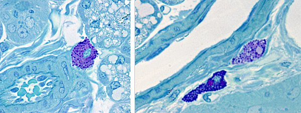
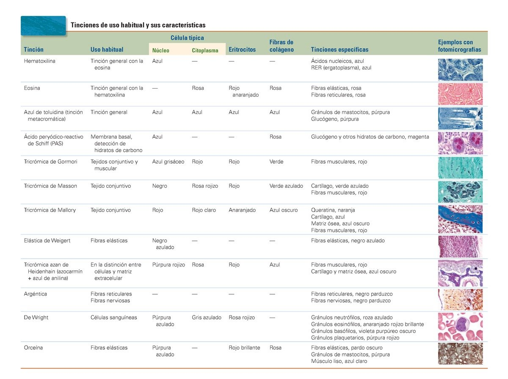

ClinicusMed · Dra. Daisy Rios · Dossiê Clinicus — Padrão de Excelência
Se denominan Técnicas Histológicas a los varios procesos mediante los cuales se prepara un tejido para su observación microscópica. Se utiliza tejido muerto, que se mantiene mediante acciones químicas inmediatamente después de extraído, y se corta en secciones muy delgadas — los cortes histológicos.
| Etapa | Nombre |
|---|---|
| 0 | Obtención de la muestra de tejido |
| 1 | Fijación |
| 2 | Deshidratación |
| 3 | Aclaramiento |
| 4 | Inclusión |
| 5 | Corte |
| 6 | Coloración |
| 7 | Montaje |
Una gran dificultad de los cortes de microscopía de luz es la imposibilidad de colorear todos los componentes de células y tejidos en un solo preparado. Cuando una estructura tridimensional es cortada en secciones muy delgadas, las secciones parecen ser bidimensionales: solo largo y ancho.

Es la técnica de coloración más utilizada en histología de rutina, y usa 2 colorantes complementarios:
| Colorante | Tipo | Colorea | Color resultante |
|---|---|---|---|
| Hematoxilina | Básico | Componentes ácidos (núcleo — ácidos nucleicos) | Morado / Lila |
| Eosina | Ácido | Componentes básicos (citoplasma, proteínas) | Rosa |
| Término | Definición |
|---|---|
| Acidofilia | Capacidad de tinción por los colorantes ÁCIDOS (ej: eosina) |
| Basofilia | Capacidad de tinción por los colorantes BÁSICOS (ej: hematoxilina) |
Mediante la fijación, se modifican las propiedades de las proteínas por desnaturalización, resultando en un aumento de la afinidad por el colorante correspondiente.
Ciertos colorantes básicos reaccionan con componentes tisulares que cambian su color normal — este cambio de absorbancia se llama metacromasia. Por ejemplo, la matriz cartilaginosa, con el colorante azul de toluidina, cambia del azul original a púrpura o rojo violáceo por la unión con el tejido.

Además de H&E, existen varias tinciones específicas para resaltar estructuras particulares:

| Tinción | Uso habitual |
|---|---|
| Azul de toluidina | Tinción metacromática general |
| PAS (ácido peryódico-reactivo de Schiff) | Membrana basal, detección de hidratos de carbono |
| Tricrómica de Masson | Tejido conjuntivo |
| Elástica de Weigert | Fibras elásticas |
| Argéntica | Fibras reticulares y fibras nerviosas |
| De Wright | Células sanguíneas |
O sistema guarda, no seu navegador, quais cards você já sabe bem e quais precisam voltar mais cedo.
Escolhe uma alternativa, depois clica em "Ver comentário completo".